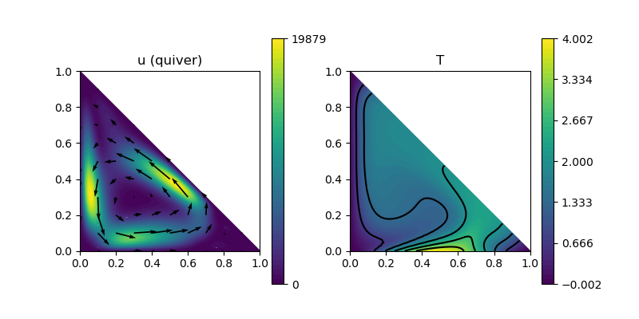

223 : Natural Convection 2D
This example solves the natural convection (or Boussinesque) problem on a triangular domain $\Omega = \mathrm{conv}\lbrace (0,0),(1,0),(0,1) \rbrace$. Altogether, we are looking for a velocity $\mathbf{u}$, a pressure $\mathbf{p}$ and a stemperature $T$ such that
\[\begin{aligned} - \Delta \mathbf{u} + (\mathbf{u} \cdot \nabla) \mathbf{u} + \nabla p & = Ra \mathbf{e}_2 T\\ \mathrm{div}(u) & = 0\\ - \Delta \mathbf{T} + \mathbf{u} \cdot \nabla \mathbf{T} & = 0 \end{aligned}\]
with some parameter $Ra$. The velocity has zero Dirichlet boundary conditions, while the temperature is zero along the y-axis, trigonometric along the x-axis and do-nothing at the diagonal boundary of the triangular domain.
Instead of using a Newton scheme, we solve a simpler fixpoint iteration plus Anderson acceleration. Also, note that a divergence-free reconstruction operator is used for the velocity, which also helps with the convergence and accuracy of the lowest-order method for this test problem.
module Example223_NaturalConvection2D
using GradientRobustMultiPhysics
# boundary data for temperature on bottom
T_bottom = DataFunction((T,x) -> (T[1] = 2*(1-cos(2*pi*x[1]))), [1,2]; dependencies = "X", quadorder = 4)
# everything is wrapped in a main function
function main(; verbosity = 0, Plotter = nothing, Ra = 1e6, viscosity = 1, nrefinements = 6)
# set log level
set_verbosity(verbosity)
# load mesh and refine
xgrid = reference_domain(Triangle2D)
xgrid = uniform_refine(xgrid, nrefinements)
# types for discretisation by Bernardi--Raugel pressure-robust (BDM1 reconstruction) + P1-FEM for temperature
FETypes = [H1BR{2}, H1P0{1}, H1P1{1}];
RIdentity = ReconstructionIdentity{HDIVBDM1{2}}
# load Stokes prototype and add a unknown for the temperature
Problem = IncompressibleNavierStokesProblem(2; viscosity = viscosity, nonlinear = false, store = true)
add_unknown!(Problem; unknown_name = "T", equation_name = "temperature equation")
Problem.name = "natural convection problem"
# add convection term for velocity
add_operator!(Problem, [1,1], ConvectionOperator(1, RIdentity, 2, 2; testfunction_operator = RIdentity, auto_newton = false))
# add boundary data for velocity (unknown 1) and temperature (unknown 3)
add_boundarydata!(Problem, 1, [1,2,3], HomogeneousDirichletBoundary)
add_boundarydata!(Problem, 3, [1], BestapproxDirichletBoundary; data = T_bottom)
add_boundarydata!(Problem, 3, [3], HomogeneousDirichletBoundary)
# add Laplacian to temperature equation
add_operator!(Problem,[3,3], LaplaceOperator(1.0; store = true, name = "∇(T)⋅∇(V)"))
# add coupling terms for velocity and temperature (convection + gravity)
add_operator!(Problem,[3,3], ConvectionOperator(1, RIdentity, 2, 1; auto_newton = false, name = "(R(u)⋅∇(T)) V"))
add_operator!(Problem,[1,3], AbstractBilinearForm([RIdentity, Identity], fdot_action(Float64,DataFunction([0,-1.0])); factor = Ra, name = "-Ra v⋅g T", store = true))
# show final problem description
@show Problem
# construct FESpaces and Solution veector
FES = [FESpace{FETypes[1]}(xgrid), FESpace{FETypes[2]}(xgrid), FESpace{FETypes[3]}(xgrid)]
Solution = FEVector{Float64}(["v_h", "p_h", "T_h"],FES)
# solve (fixedpoint iteration by solving consecutively equations [3] and [1,2] + Anderson acceleration)
solve!(Solution, Problem; subiterations = [[3],[1,2]], maxiterations = 100, target_residual = 1e-8, anderson_iterations = 5, anderson_metric = "l2", anderson_unknowns = [1,3], anderson_damping = 0.95, show_solver_config = true)
# compute Nusselt number along bottom boundary
NuIntegrator = ItemIntegrator(Float64,ON_BFACES,[Jump(Gradient)], fdot_action(Float64,DataFunction([0,-1.0])); regions = [1])
println("\tNu = $(evaluate(NuIntegrator,[Solution[3]]))")
# plot
GradientRobustMultiPhysics.plot(xgrid, [Solution[1], Solution[3]], [Identity, Identity]; Plotter = Plotter)
end
endThis page was generated using Literate.jl.
Default output:
julia> Example223_NaturalConvection2D.main()
PDE-DESCRIPTION
===============
system name = natural convection problem
id | unknown name / equation name
[1] | velocity / momentum equation
[2] | pressure / incompressibility constraint
[3] | T / temperature equation
LHS block | PDEOperator(s)
[1,1] | ∇(u):∇(v) (APT = SymmetricBilinearForm, AT = ON_CELLS, regions = [0])
| (R(a) ⋅ ∇) u ⋅ R(v) (APT = TrilinearForm, AT = ON_CELLS, regions = [0])
[1,2] | div(v) ⋅ q (APT = BilinearForm, AT = ON_CELLS, regions = [0])
[1,3] | -Ra v⋅g T (APT = BilinearForm, AT = ON_CELLS, regions = [0])
[2,1] | none
[2,2] | none
[2,3] | none
[3,1] | none
[3,2] | none
[3,3] | ∇(T)⋅∇(V) (APT = SymmetricBilinearForm, AT = ON_CELLS, regions = [0])
| (R(u)⋅∇(T)) V (APT = TrilinearForm, AT = ON_CELLS, regions = [0])
RHS block | PDEOperator(s)
[1] | none
[2] | none
[3] | none
BoundaryOperator[1] : HomogeneousDirichletBoundary -> [1, 2, 3]
BoundaryOperator[2] :
BoundaryOperator[3] : BestapproxDirichletBoundary -> [1]
HomogeneousDirichletBoundary -> [3]
GlobalConstraints[1] : Mean[2] != 0
Problem =
SC =
SOLVER-CONFIGURATION
======================
overall nonlinear = true
overall timedependent = false
anderson_iterations = 5
subiterations = [[3], [1, 2]]
show_iteration_details = true
timedependent_equations = Any[]
anderson_unknowns = [1, 3]
show_statistics = false
anderson_metric = l2
skip_update = [1, 1]
linsolver = GradientRobustMultiPhysics.LinearSystem{Float64, Int64, LUFactorization}
damping = 0
time = 0
show_solver_config = true
anderson_damping = 0.95
check_nonlinear_residual = true
fixed_penalty = 1.0e60
target_residual = 1.0e-8
maxiterations = 100
AssemblyTriggers =
LHS_AT[1] : A I T
LHS_AT[2] : N N N
LHS_AT[3] : N N A
RHS_AT[1] : N
RHS_AT[2] : N
RHS_AT[3] : N
(I = Once, T = EachTimeStep/SubIteration, A = Always, N = Never)
LHS_dependencies = [[1] [1, 2] [1, 3]; [2, 1] [2] [2, 3]; [3, 1] [3, 2] [3, 1]]
ITERATION | LSRESIDUAL | NLRESIDUAL
--------------------------------------
1 | 7.060842e-11 | 9.063645e+01
2 | 9.811545e-11 | 7.488134e+00
3 | 7.129821e-11 | 6.022488e-01
4 | 7.338599e-11 | 4.960060e-01
5 | 7.397533e-11 | 1.250719e-01
6 | 7.537396e-11 | 7.680621e-01
7 | 8.019342e-11 | 7.043239e-01
8 | 7.533099e-11 | 9.364728e+00
9 | 6.840001e-11 | 1.205297e+01
10 | 8.793809e-11 | 1.435981e+01
11 | 9.561930e-11 | 5.871295e+00
12 | 9.569085e-11 | 2.401963e+00
13 | 9.979292e-11 | 2.770361e+00
14 | 9.114106e-11 | 4.056945e+00
15 | 6.896936e-11 | 2.038940e+00
16 | 6.669183e-11 | 1.668131e+00
17 | 7.681351e-11 | 3.157813e-01
18 | 7.718270e-11 | 2.898775e-01
19 | 7.717242e-11 | 5.488417e-01
20 | 7.522673e-11 | 2.264459e-01
21 | 7.432988e-11 | 1.282042e-01
22 | 7.060411e-11 | 8.975790e-02
23 | 7.178466e-11 | 6.103222e-02
24 | 7.179335e-11 | 3.920953e-02
25 | 7.263905e-11 | 2.192602e-02
26 | 7.267845e-11 | 1.611986e-02
27 | 7.343730e-11 | 8.210658e-03
28 | 7.483484e-11 | 6.087826e-03
29 | 7.013140e-11 | 2.278378e-03
30 | 7.197072e-11 | 1.832466e-03
31 | 7.001814e-11 | 5.785445e-04
32 | 7.353957e-11 | 2.213736e-04
33 | 7.171973e-11 | 1.645343e-04
34 | 7.212808e-11 | 4.255229e-05
35 | 7.439338e-11 | 4.165039e-05
36 | 7.948317e-11 | 1.833512e-05
37 | 7.563354e-11 | 8.190263e-06
38 | 7.650725e-11 | 5.154906e-06
39 | 7.369183e-11 | 1.895523e-06
40 | 7.255902e-11 | 1.912427e-06
41 | 7.542666e-11 | 4.921489e-07
42 | 7.360409e-11 | 3.690981e-07
43 | 7.615524e-11 | 4.227189e-07
44 | 7.481991e-11 | 8.429614e-08
45 | 7.589538e-11 | 4.647877e-08
46 | 7.618508e-11 | 4.431606e-08
47 | 7.036822e-11 | 1.804110e-08
48 | 7.374035e-11 | 1.100999e-08
49 | 7.396355e-11 | 7.748425e-09
Nu = 22.6383732612737